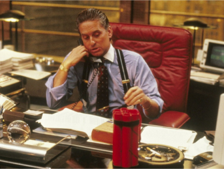

Voilà un film à absolument regarder. Wall Street, c’est avant tout une rue emblématique de New-York, ville de vos rêves. Quartier de la bourse, ce nom mythique signe avec brio la volonté d’ambition et de réussite.
C’est ici que commence l’histoire du film que j’ai choisi de vous présenter. Réalisé par Oliver Stone en 1987, « Wall Street » raconte l’histoire d’un certain Bud Fox, rôle incarné par Charlie Sheen, ambitieux courtier en bourse junior qui a soif de réussir dans la voie qu’il entreprend. Sa vie est rythmée par les coups de téléphone incessants qu’il passe à longueur de journée afin de convaincre des particuliers d’investir dans des actions plus ou moins rentables. La performance est de rigueur, elle y est sans cesse rappelé et martelée par son patron.
Une opportunité plus que rêvée pour Bud va lui donner l’occasion de changer sa vie, en apprenant un matin en consultant son ordinateur qu’il s’agit aujourd’hui de l’anniversaire de Gordon Gecko, célèbre agent de change reconnu par tous. Après 59 tentatives ratées (exactement !) de demandes de rendez-vous avec Gecko auprès de sa secrétaire, Bud Fox tente au culot de passer sans frapper la porte de son bureau. Il réussit ainsi à attirer l’attention du maître. Bud Fox parvient alors à convaincre Gordon Gecko de le prendre sous son aile. Gecko remarque la volonté acharnée de Fox de sortir de sa condition et son désir de succès.
Il va aussitôt lui apprendre à tirer son épingle du jeu. Fox passe tout à coup un cran au-dessus. Il va côtoyer les plus grands et les plus talentueux. Il change sa condition sociale. On remarque ainsi la différence le père, Carl Fox alias Martin Sheen (également son père dans la vraie vie !), ouvrier dans la compagnie Bluestar Airlines et vivant une destinée calme et sans histoire, face à son fils, Bud Fox, désormais complice de Gordon Gecko en même temps que son travail de démarcheur téléphonique, vivant un rythme éfrreiné à 200 à l’heure et baignant dans l’illégalité de ses actions. Il sera très rapidement rattrapé par son destin. Ses agissements ainsi que ceux de Gecko, qui tentera même de le piéger, ne resteront pas incognitos.

D’une vie de labeur ne donnant aucun sens, en passant par une ascension rapide, un changement radical de mode de vie à une chute brutale, presque théâtrale, ce film représente parfaitement pour moi ton ambition et ta volonté de réussir. Même la fin du film y trouve son importance.
Un désir d’évoluer, conquérir tel un guerrier son environnement et y puiser la réussite. Tout ça est tentant pour quelqu’un comme vous, c’est vrai.
« Tu es à un stage de ta vie où tu peux devenir qui tu veux » disait Orelsan. Vous pouvez devenir un Bud Fox ou bien un Jordan Belfort (pour ne pas citer qu’un seul film), cependant ne vous brûlez pas les ailes pour autant. Une progression n’a pas qu’un seul schéma. Elle peut être rapide comme prendre des années, l’important est d’être patient et d’attendre les opportunités, ou bien de les provoquer soi-même comme Fox. La patience, c’est très difficile pour vous. Tout va aujourd’hui vite avec Internet et il y a certains schémas de vie dont vous voulez vous affranchir. Pensez toujours à votre objectif. « Si tu le veux vraiment, tu peux », comme dit mon grand-père. Rendez les fiers, la réussite n’est pas seulement que pour vous.
Retour en haut !